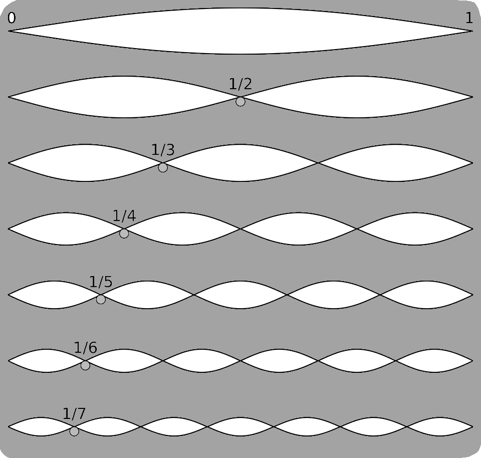

I'm back at the project! The Robotix team has advanced to regionals (yay!)
so I might end up missing a few more days in the future to work on the robot, but I don't think I'll have to spend
a full school week away from this project again.
At the beginning of the week I whipped up a python script that generates wavetables for our synth.
A wavetable is one cycle of a waveform that can be played over-and-over at different pitches to create an instrument.
By generating series of overtones (combinations of sine waves produced by vibrating objects) and
combining them into wavetables we can emulate and create all sorts of different instruments!

We've created a few instruments that we can cycle through with a button on the board, but in the future we'll
make more (and better) instruments/sounds for our synth!
The joysticks came at the start of the week, allowing us to upgrade from our set-up of three clicky buttons to
three wiggly joysticks! They allow us to have controller variable volume and vibrato/bend, as shown in this little
video of my playing the current prototype.
(ignore the background chatter :)
We now have a week off from school, so I plan to hopefully model piano-like keys that will connect to the joysticks and
allow us to play the instrument more comfortably.